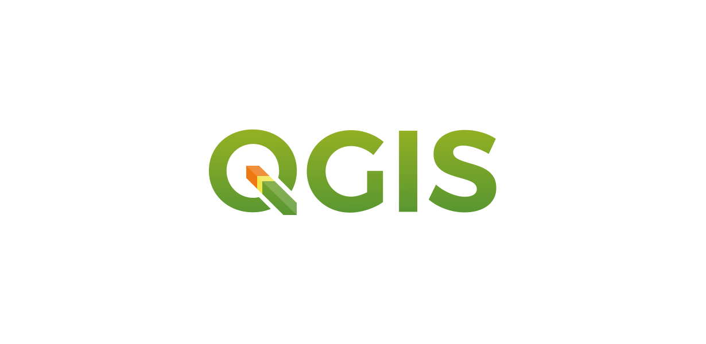
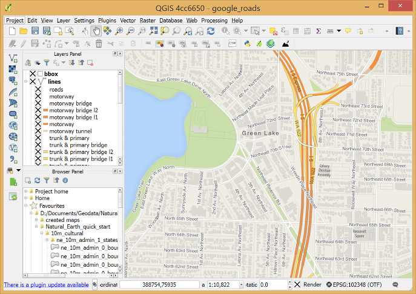
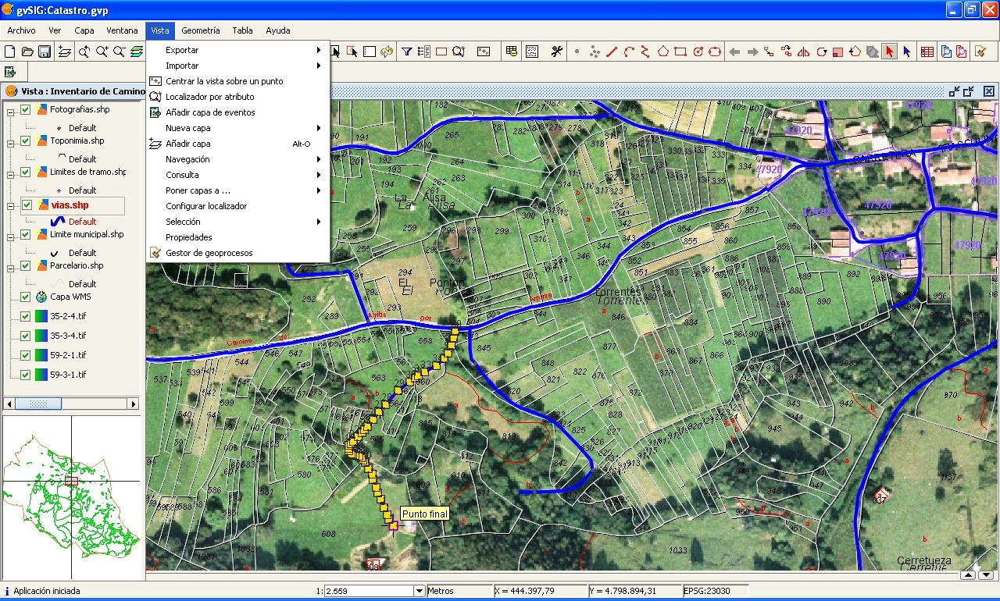
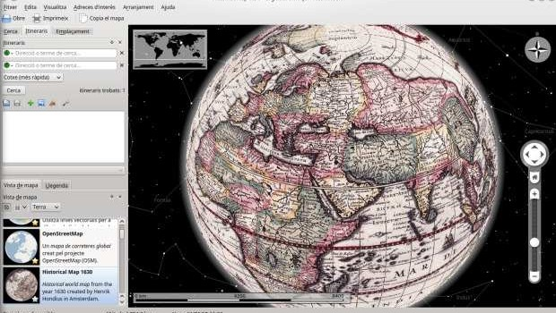

| # | Herramienta | Interfaz | Descripción | Ventajas |
|---|---|---|---|---|
| 1 |

Qgis |
 | QGIS es un Sistema de Información Geográfica de software libre y de código abierto para plataformas GNU/Linux, Unix, Mac OS, Microsoft Windows y Android. Fue uno de los primeros ocho proyectos de la Fundación OSGeo. |
|
| 2 |  | GvSIG es un proyecto de desarrollo de software para Sistemas de Información Geográfica basado en software libre. El catálogo de tecnologías gvSIG se ha ido ampliando con el tiempo. gvSIG Desktop fue el primer software que se desarrolló dentro del proyecto gvSIG, por lo que también se conoce abreviadamente como gvSIG |
|
|
| 3 | Paint.Net
Marble |
 | Marble es un programa de Proyecto de Educación KDE de código abierto similar a NASA Worl Wind o Google Earth. Además de elegir cualquier cantidad de mapas para ver en su globo (incluidos OpenStretMaps), se le recomienda incluir un widget KDE Marble en su aplicación.. |
|